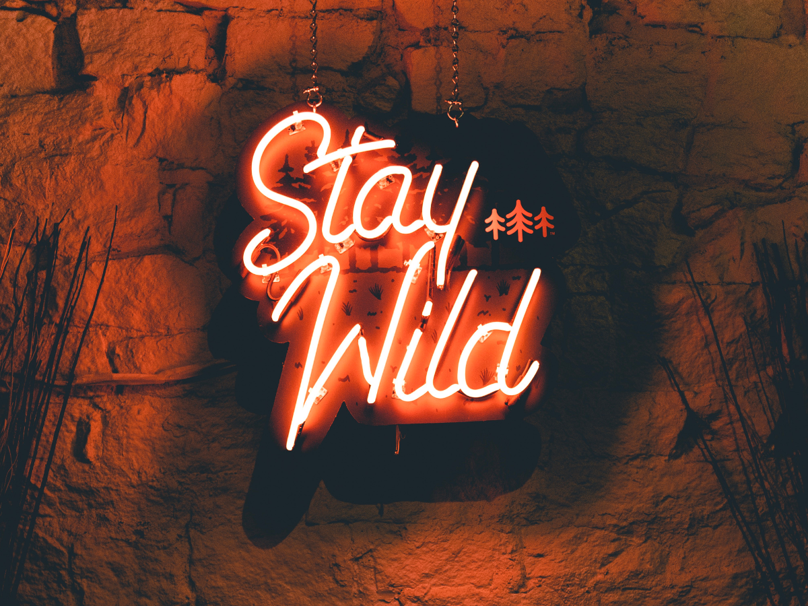

Vic & Erin have been friends since childhood, the kind of friendship built on inside jokes, late-night talks, and laughing through life’s unexpected moments. Over the years, we realized something important: the conversations that helped us navigate life might resonate with others, too.
Wild-Hearted Friends was created as a space where honesty, humor, and real-life experiences can coexist. Life rarely goes exactly as planned, and sometimes the best way through the chaos is simply to laugh, reflect, and stay connected to the people who remind us who we are.
This podcast is about embracing the unpredictable moments, sharing stories that feel both personal and universal, and creating something that feels welcoming, relatable, and genuine. We believe conversation has the power to connect people, spark new perspectives, and remind us that we’re not alone in our experiences.
Whether we’re talking about everyday mishaps, meaningful life lessons, or the small things that somehow become big memories, our goal is simple: to create a place where listeners feel like part of the conversation.
Thanks for being here at the beginning of this journey with us.
XO – Vic & Erin